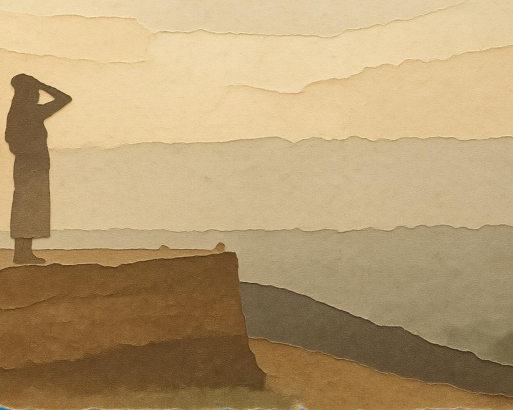
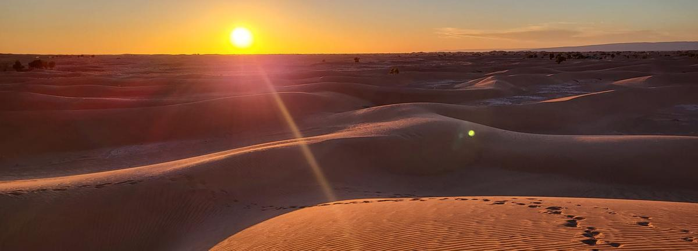

Chaque bande montre l'ambiance, la palette, les polices, le premier écran en miniature (avec les vraies images du client) et le plan de l'accueil. Les textes sont ceux du site actuel.
Le site devient le carnet de voyage que promet le client : « Du rêve au trip, une aventure dessinée ». Papier crème, couches de papier découpé qui s'écartent au défilement, collages du client en grand, notes manuscrites fuchsia.

Un·e professionnel·le du voyage conçoit un séjour 100 % personnalisé, selon vos envies, votre rythme et votre budget.
Je trouve mon travel plannerFraunces, en italique
Titres : Fraunces · texte : Figtree · notes à la main : Caveat (courtes, rares)
Une direction photographique et émotionnelle, née des couchers de soleil du client : grandes photos plein cadre, ouverture sombre aubergine qui se réchauffe au défilement, chiffres et titres très grands.

Un·e spécialiste de votre destination dessine votre voyage avec vous.
Je trouve mon travel plannerGloock, très grand
Titres : Gloock · texte : Manrope
Une direction ludique et colorée, tirée des panneaux indicateurs du site actuel : une carte du monde illustrée au cœur de l'accueil, des panneaux redessinés proprement en code qui pointent vers les thèmes et les pays.
Un thème, un pays : on vous présente le·la pro qui les connaît par cœur.
Je trouve mon travel plannerFredoka, ronde et gaie
Titres : Fredoka · texte : Nunito
La direction A part de ce que le client a de plus fort et de plus personnel : ses collages en papier découpé (de grande qualité, 2000 px), son slogan « une aventure dessinée » et ses couleurs fuchsia et abricot. Elle reste chaleureuse et lisible pour tous les thèmes, de la lune de miel au safari éthique.